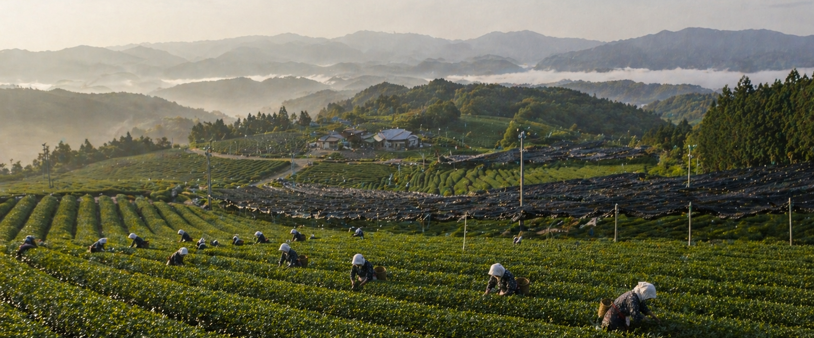

WHERE WE SOURCE
At Milk&Match, sourcing is where every drink truly begins. We believe that the quality of what you taste in the cup is a direct reflection of where it comes from, which is why we work closely with independent farmers and small-scale producers across Asia. Rather than relying on mass distributors or pre-processed blends, we seek out growers who share our commitment to craftsmanship, sustainability, and tradition. These relationships allow us to understand not only the ingredients themselves, but the people, land, and practices behind them.
Our matcha is primarily sourced from select regions in Japan known for their rich soil and generations of tea cultivation. We partner with small farms that carefully shade, harvest, and stone-grind their leaves using time-honored methods. Each batch is produced with intention, preserving the vibrant color, smooth texture, and layered flavor that define high-quality matcha. Because these farms operate on a smaller scale, the process cannot be rushed—and we believe that’s exactly what makes it worth it.

For our loose leaf teas, we expand our sourcing to include trusted growers across countries like China, Taiwan, and parts of Southeast Asia. These regions are home to a wide variety of tea traditions, each with its own distinct character. By working directly with independent farmers, we’re able to select whole leaves that retain their natural complexity, rather than settling for broken or overly processed alternatives. This ensures that every tea we serve carries the depth, aroma, and authenticity it was meant to have.
Freshness is just as important as origin. Once harvested and prepared, our teas are carefully packaged and shipped to our shop in small batches to maintain their integrity. We avoid long storage times and large-scale warehousing, allowing us to serve products that are closer to their peak condition. This approach not only preserves flavor, but also honors the effort that goes into producing each harvest.
At its core, our sourcing philosophy is built on respect—respect for the farmers, the traditions, and the ingredients themselves. By choosing to work with independent producers and prioritizing quality over convenience, Milk&Match ensures that every cup reflects something real. Not just a drink, but a connection to the people and places that make it possible.